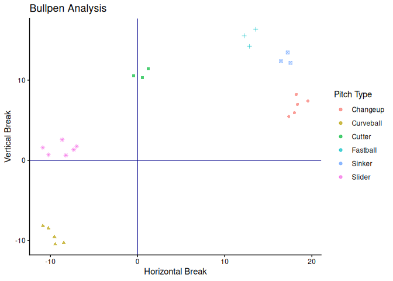
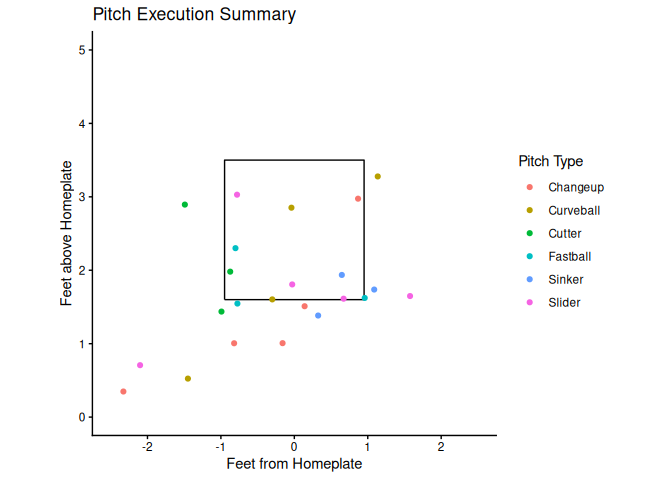

The goal of BSBReport is to assist in analyzing trackman data from bullpens or live at bats. BSBReport generates multiple plots and tables to better understand pitch data for future execution and pitch design programming.
Installation
You can install the development version of BSBReport from GitHub with:
# install.packages("devtools")
devtools::install_github("ADC-405-S26/BSBReport")Examples
BSB Report has three main functions to view pitch movement data, pitch location data, and summary data from a session. There are 3 functions to use, each relating to a different aspect of bullpen data. To use BSBReport, a standard trackman file must be used.
Pitch_Plot example
Pitch_Plot can be used to visualize and summarize movement data from a session. The output yields a color-shape coded movement plot and a summary table with averages for relevant metrics.
library(dplyr)
#>
#> Attaching package: 'dplyr'
#> The following objects are masked from 'package:stats':
#>
#> filter, lag
#> The following objects are masked from 'package:base':
#>
#> intersect, setdiff, setequal, union
library(ggplot2)
library(knitr)
Pitch_Plot(trackman_data)
#> $plot
#>
#> $table
#> # A tibble: 6 × 5
#> TaggedPitchType Pitch_Count Avg_Speed Avg_Vertical_Break Avg_Horizontal_Break
#> <chr> <int> <dbl> <dbl> <dbl>
#> 1 Changeup 5 81.7 6.8 18.3
#> 2 Curveball 5 76.3 -9.39 -9.71
#> 3 Cutter 3 84.2 10.8 0.45
#> 4 Fastball 3 88.3 15.4 12.9
#> 5 Sinker 3 87.3 12.7 17.1
#> 6 Slider 6 80.3 1.42 -8.72Plate_Viz example
Plate_Viz examines the location of pitches relative to the strike zone and the plate. Offering a table with exact location averages along with other relevant metrics, the subsequent plot gives a visual for where pitches landed when compared to the strike zone.

#>
#> $table
#> # A tibble: 6 × 5
#> TaggedPitchType Pitch_Count Avg_Speed Avg_Plate_Height Avg_Plate_Side
#> <chr> <int> <dbl> <dbl> <dbl>
#> 1 Changeup 5 81.7 1.37 -0.46
#> 2 Curveball 5 76.3 1.58 -0.7
#> 3 Cutter 3 84.2 2.1 -1.12
#> 4 Fastball 3 88.3 1.82 -0.21
#> 5 Sinker 3 87.3 1.69 0.69
#> 6 Slider 6 80.3 1.38 -0.6Master_Summary example
The command Master_Summary can be used to get a full analysis of both movement and location data. It also contains a Strike Percentage calculation based on the standard strike zone measurements.
library(dplyr)
library(ggplot2)
library(knitr)
library(kableExtra)
#>
#> Attaching package: 'kableExtra'
#> The following object is masked from 'package:dplyr':
#>
#> group_rows
Master_Summary(trackman_data)| Pitch Type | Pitch Count | Velocity (mph) | Strike Percentage | Vertical Break (in) | Horizontal Break (in) | Location Height (ft) | Location Side (ft) |
|---|---|---|---|---|---|---|---|
| Slider | 6 | 80.27 | 50 | 1.42 | -8.72 | 1.38 | -0.60 |
| Curveball | 5 | 76.31 | 40 | -9.39 | -9.71 | 1.58 | -0.70 |
| Cutter | 3 | 84.25 | 33.3 | 10.78 | 0.45 | 2.10 | -1.12 |
| Fastball | 3 | 88.33 | 33.3 | 15.37 | 12.88 | 1.82 | -0.21 |
| Sinker | 3 | 87.32 | 33.3 | 12.66 | 17.07 | 1.69 | 0.69 |
| Changeup | 5 | 81.66 | 20 | 6.80 | 18.29 | 1.37 | -0.46 |